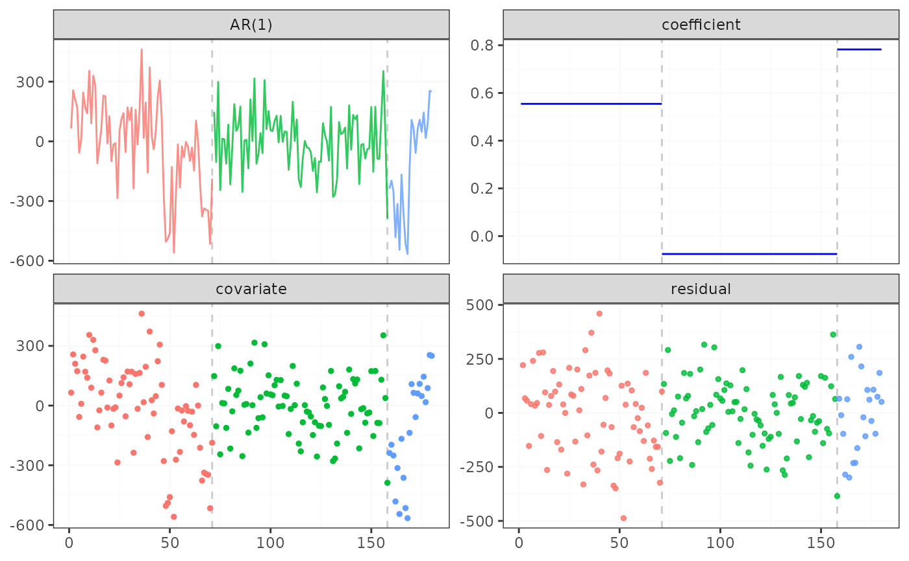
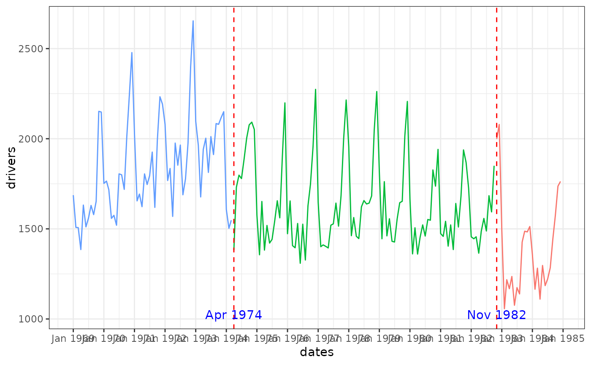

Road Casualties in Great Britain 1969–84.
Format
uk_seatbelts is a multiple time series, with columns
- DriversKilled
car drivers killed.
- front
front-seat passengers killed or seriously injured.
- rear
rear-seat passengers killed or seriously injured.
- kms
distance driven.
- PetrolPrice
petrol price.
- VanKilled
number of van (‘light goods vehicle’) drivers.
- law
0/1: was the law in effect that month?
Examples
if (requireNamespace("ggplot2", quietly = TRUE)) {
result_ar <- fastcpd.ar(diff(uk_seatbelts[, "drivers"], 12), 1, beta = "BIC")
summary(result_ar)
plot(result_ar)
result_lm <- suppressMessages(fastcpd.lm(
diff(uk_seatbelts[, c("drivers", "kms", "PetrolPrice", "law")], lag = 12)
))
# Compute change point dates:
cp_dates <- as.POSIXlt(as.Date("1969-01-01", format = "%Y-%m-%d"))
cp_dates$mon <- cp_dates$mon + (1 + result_lm@cp_set + 12)
cp_dates <- as.Date(cp_dates)
# Convert the time series to Date objects:
# For a monthly ts object, extract year and month manually.
time_vals <- time(uk_seatbelts)
years <- floor(time_vals)
months <- round((time_vals - years) * 12 + 1)
dates <- as.Date(paste(years, months, "01", sep = "-"), format = "%Y-%m-%d")
# Prepare the data frame for plotting
# 'color' is defined similarly to the original code.
uk_seatbelts_df <- data.frame(
dates = dates,
drivers = as.numeric(uk_seatbelts[, "drivers"]),
color = as.factor((dates < cp_dates[1]) + (dates < cp_dates[2]))
)
p <- ggplot2::ggplot(
data = uk_seatbelts_df,
ggplot2::aes(x = dates, y = drivers, color = color)
) +
ggplot2::geom_line() +
ggplot2::geom_vline(
xintercept = cp_dates,
linetype = "dashed",
color = "red"
) +
ggplot2::scale_x_date(date_labels = "%b %Y", date_breaks = "1 year") +
ggplot2::annotate(
"text",
x = cp_dates,
y = 1025,
label = format(cp_dates, "%b %Y"),
color = "blue"
) +
ggplot2::theme_bw() +
ggplot2::theme(legend.position = "none")
print(p)
}
#>
#> Call:
#> fastcpd.ar(data = diff(uk_seatbelts[, "drivers"], 12), order = 1,
#> beta = "BIC")
#>
#> Change points:
#> 71 158
#>
#> Cost values:
#> 1294599 914677.1 310959.6
#>
#> Parameters:
#> segment 1 segment 2 segment 3
#> 1 0.5543967 -0.07501079 0.7825427

